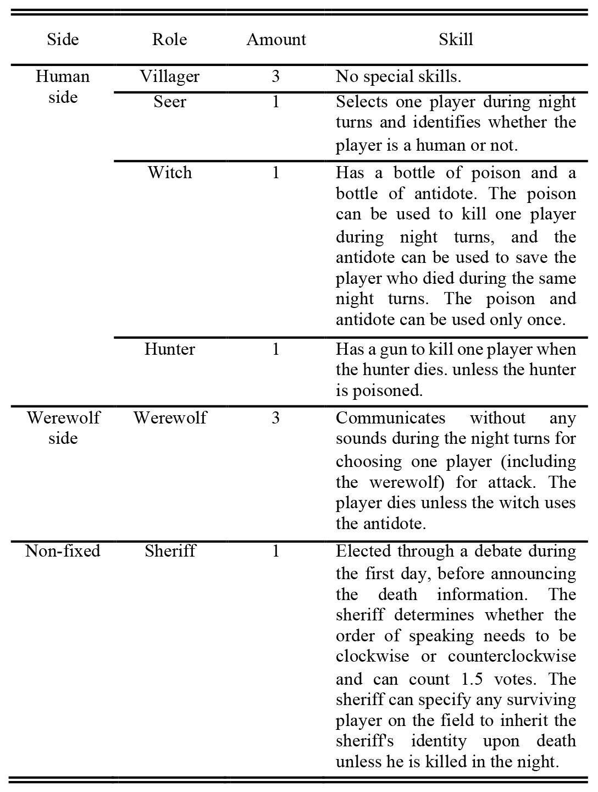

A Database for Identifying Spontaneous Affect in Large Competitive Group Interactions
College of Computer Science and Technology , Zhejiang University
To acquire access to the database:
Please note, that any requests from free email addresses (hotmail, yahoo, gmail, etc.) will be refused. After submission of the form, it may take up to a week for you to receive the download link (you will receive a notification by email).
Due to the maintenance and upgrade of our lab website, we temporarily host the information about the Werewolf-XL Database on Github
Existing databases usually record posed or induced human behavior in individual or dyadic settings with biased annotations in which a basic emotional class label or a Valence–Arousal pair value represents the emotional states. To address this need,We created the “Werewolf-XL” database, which contains a total of 987 h of spontaneous audio-visual recordings of 129 subjects in a group interaction of nine individuals playing a conversational role-playing game called Werewolf. We provide 133,461 individual utterance-level video clips with internal (18 non-prototypical emotional categories) and external (pleasure, arousal, and dominance) emotion annotations including 14,635 samples from speaking players. Besides, the results of annotation agreement analysis show fair reliability and validity. Furthermore, we provided extensive benchmarks of unimodal and multimodal emotional recognition results. The database (the video clips, annotations, features and protocols) is made publicly available, which provides great opportunities for researchers in affective computing and beyond.
The Werewolf rule of the database followed the visions of nine participants. The game was directed by a moderator, and each player was randomly assigned to a role either on the human’s side or on the werewolf’s side. The details of the various roles are listed in the below Table. Furthermore, the Werewolf game rules are slightly different under different cultural background, we provide a simple game rules and videos from our real scene in our dataset1.
Our game proceeds in two alternating turns: 1) night turn and 2) day turn; the game starts with night turn. Night turn requires all players to close their eyes in the beginning. The moderator wakes up players in the order of werewolf, seer, and witch to perform their operations; after their operations, they need to close their eyes again. The hunter is awakened last and told whether he/she was murdered by others. Then, the day turn starts, and all players open their eyes.On the first day, a sheriff needs to be elected; all the players can participate in the election. To ensure that the sheriff is elected fairly, each candidate is given a chance to speak and convince others of his/her suitability for the post. The player who is murdered last night will be announced. Then, the sheriff decides the order in which the players will speak (clockwise or counterclockwise). The living players take turns to guess who the werewolves are or to rebut others’ opinions and decide who should be lynched by voting. When one player speaks, other players are not allowed to interrupt. In addition, the players who died in the first night and the other players who were lynched can make a last statement before stepping into the next night turn. The game ends when one of the following three situations occurs:
First and foremost we'd like to thank the 129 participants in this study for having the patience and goodwill to let us record their data. This dataset was collected by a crack squad of dedicated researchers:
This work was supported by :
We would like to thank the Key Laboratory of Design Intelligence and Digital Crea-tivity of Zhejiang Province, Alibaba-Zhejiang Uni-versity Joint Institute of Frontier Technologies and State Key Lab of CAD&CG.